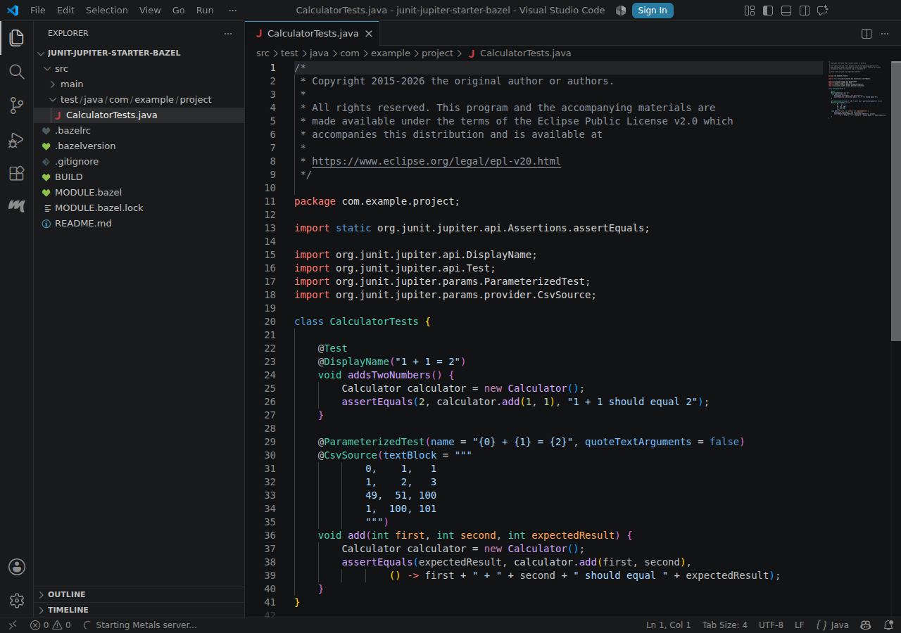
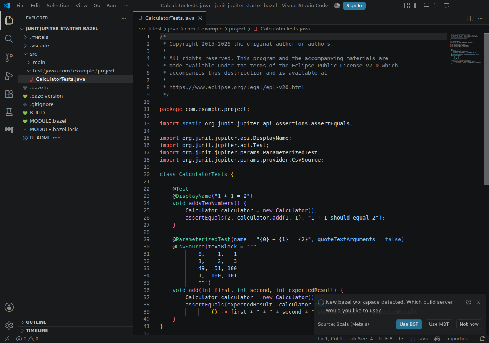
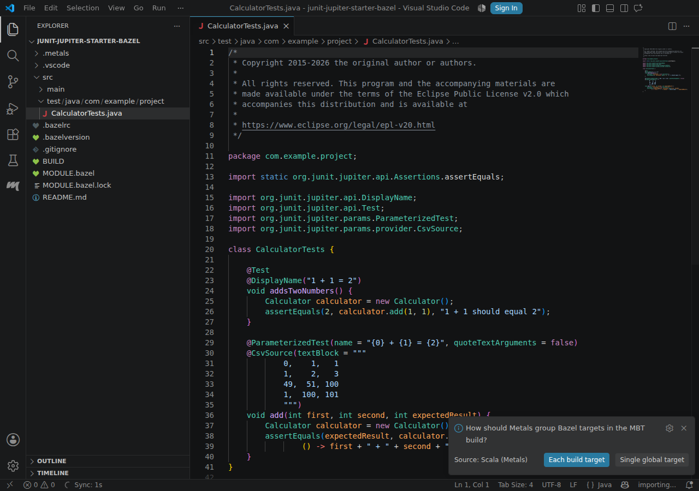
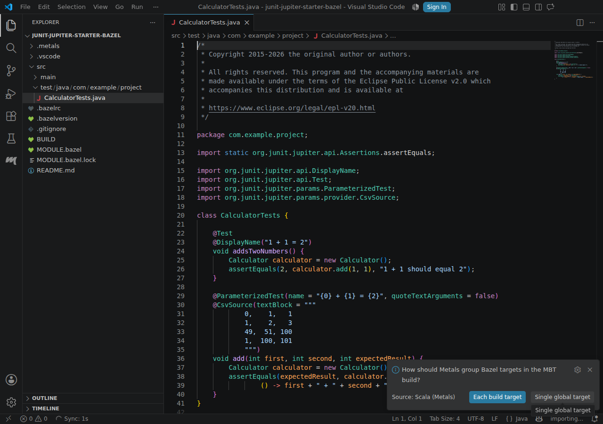
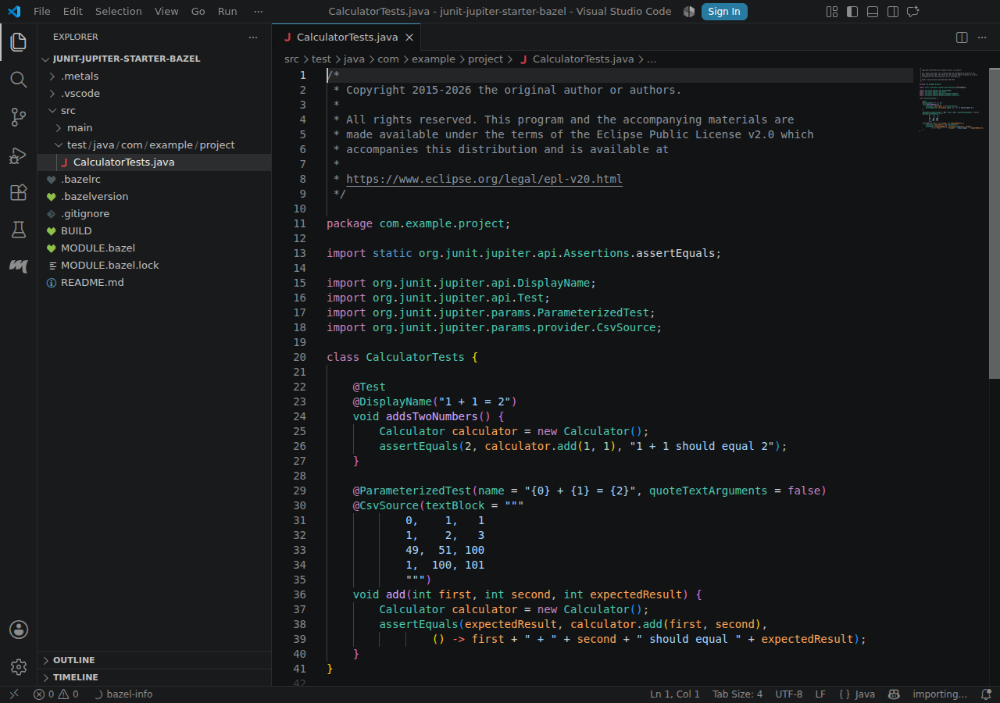
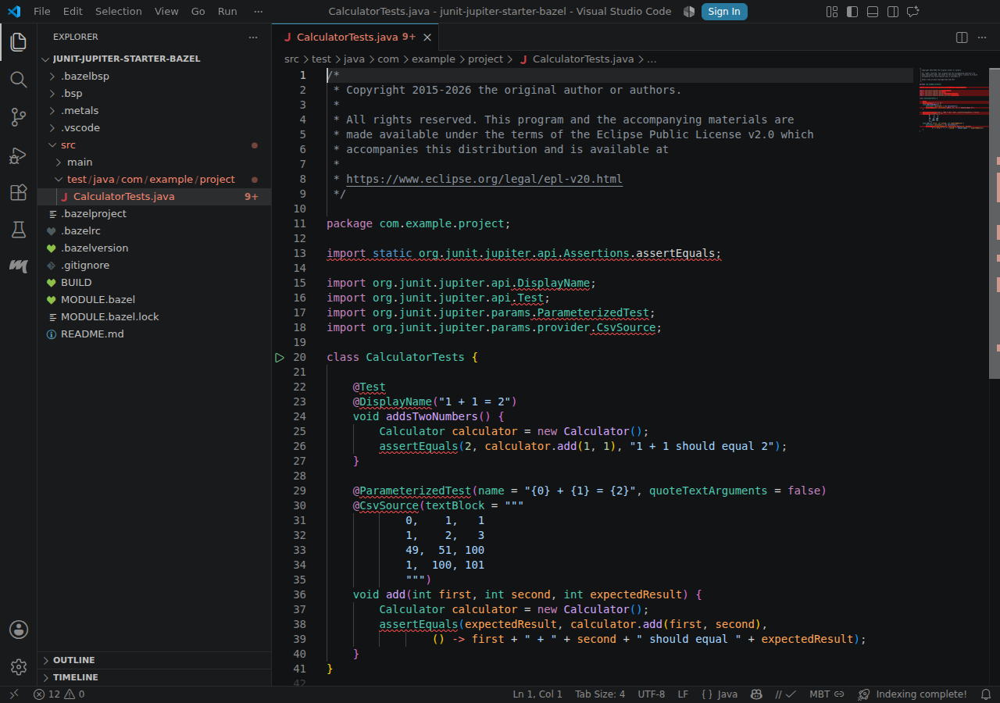

Bazel
JUnit Jupiter starter (Bazel)
junit-team/junit-examples@main
failedScenarios
-
failed import mbt-import · 84.5 s
Expected a dependency module matching 'org.junit.jupiter:junit-jupiter-api' among 0 modules
Screenshots (7)

001-file-opened.png 
002-build-server-prompt.png 
003-mbt-selected.png 
004-namespace-mode-prompt.png 
005-namespace-mode-selected.png 006-mbt-imported.png 
007-failure.png -
skipped test-discovery java-test-discovery · 0 ms
Screenshots (0)
No screenshots were produced for this scenario.
-
skipped calculator-definition go-to-definition · 0 ms
Screenshots (0)
No screenshots were produced for this scenario.
-
skipped debug-adds-two-numbers java-debug-test · 0 ms
Screenshots (0)
No screenshots were produced for this scenario.


MBT model
1 namespaces
0 dependencies
0 unchecked sources
workspaces/project/junit-jupiter-starter-bazel/.metals/mbt.json
Open this section to load the file.
Logs
workspaces/project/junit-jupiter-starter-bazel/.metals/metals.log
Open this section to load the file.